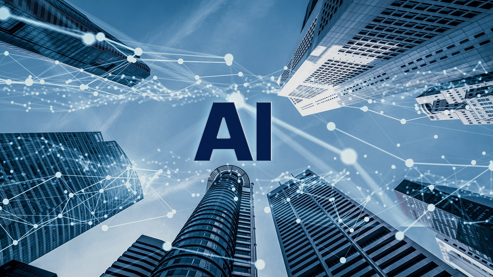

들어가며
요즘 전세계적으로 인공지능에 대해 들어보지 않은 사람은 없을 것입니다.
인공지능에 대해 잘 알지 못하는 사람들은 흔히 '인공지능이 만능이다'라는 환상을 가지고 있고
인공지능에 대해 열성적으로 공부하고 기술의 현재 수준과 한계에 대해서도 이해하고 있는 사람들로 나눠집니다.
1965년 인공지능이라는 용어가 첫 탄생한 이래, 인공지능은 상당히 오랜 기간 연구되며 우리의 일상의
다양한 곳에 적용되어 왔지만 우리는 여전히 인공지능을 미래기술로서 생각하고 있습니다.
이는 인공지능이 지적인 무언가를 연구하는 것이기에, 그 원리를 발견해버리면 더 이상 지능이 아니다."라고 생각하기 때문입니다.
즉 , 인공지능에 대한 연구는 현재까지 발견된 것을 제쳐두고, '우리가 아직 발견하지 못한 지능의 비결'을 이정표 삼아 끊임없이 개척되고 있습니다.
현시대는 인공지능을 중심으로 여러 분야들이 개편되는 모습을 보여주며 신드롬을 일으키는 것을 넘어서며 새로운 AI중심 시대를 열어가는 중입니다.
인공지능 소개 페이지에서는 인공지능을 잘 모르는 사람이나 커리어, 업무 등의 이유로 인공지능을 공부해야하는 사람들을 위해 인공지능을 쉽게 설명하고자 합니다.
인공지능 기본개념
인공지능의 개념을 간단히 얘기하면 '인간이 지닌 지능의 원리를 찾고 이를 인공적으로 만들어 내는 것'입니다.
인공지능 주요 기술

인공"언어"지능을 연구하는 자연어 처리
자연어 처리란 인공지능의 하위 분야로, 인간의 다양한 지능 중 "언어 이해 능력"을 구현하기 위한 기술입니다.
즉,컴퓨터가 인간처럼 언어를 이해하고 인간과 소통할 수 있도록 만드는 것 입니다.
자연어 처리는 아래와 같은 다양한 분야에서 사용됩니다.
- 챗봇
- 언어 번역
- 음성봇
한동안 봄이였던 챗봇은 전국민에게 인공지능이 구현된 모습을 확실히 각인시켰던 서비스 입니다.
최근에 나온 갤럭시 S24에 탑재되어 있는 기술입니다.
우리에게 정말 친숙한 '하이 빅스비' 할 때 빅스비가 대표적인 음성봇이라고 할 수 있습니다.
이 모든 기술의 바탕에는 기계에게 인간의 언어지능을 만들어 주는 자연어 처리가 있다 할 수 있습니다.
스스로 학습, 머신러닝(기계학습)
머신러닝은 데이터를 통한 학습이 꼭 필요합니다.
컴퓨터는 머신러닝을 통해 대량의 데이터를 처리하면서 경험을 쌓습니다. 경험을 바탕으로 데이터에 대한 나름의 기준을 잡게 되고, 이 모델을 바탕으로
기존에 보지 못했던 새로운 입력 데이터가 들어와도 스스로 척척 판단내릴 수 있게 됩니다. 그럼 이제, 어떻게 "학습 시킬 수 있는지 세가지 방법론을 소개하겠습니다.
기계에게 문제와 답을 모두 알려주며 공부시키는 방법입니다.이러한 작업을 라벨링이라 합니다.
지도학습과는 반대로 문제만 알려주고 답을 가르쳐 주지 않으며 공부시키는 방법입니다. 연관규칙이나 군집 유형의 문제에 적합합니다.
지도학습과 비지도학습의 중간 단계로, 기계가 스스로 학습하는 방법입니다. 상태와 행동을 통해 학습하는 방법입니다.
인공신경망
인공신경망이란, 머신러닝의 방법론 중 하나로 인간의 뇌 신경회로의 작동방식을 따라하여 판단을 내리는 것입니다.
다만, 이러한 신경망 방식의 가장 큰 한계는 최적화가 어렵다는 것입니다. 수만개의 신경회로들이 연결되어 있고, 선들에
가중치를 부여하는 최적화 작업이 너무 복잡하기 때문에 너무 많은 시간이 소요됩니다.
딥러닝
인공 신경망의 문제들을 딥러닝이 해결하였습니다. "비지도학습"을 통해 훈련할 데이터를 전처리하였고 이렇게 전처리한 데이터를
여러 층 쌓아올려 인공신경망 최적화를 수행했습니다.
딥러닝을 컴퓨터 비전, 이미지 인식, 음성 인식, 추천 시스템, 위에서 언급한 자연어 처리 등, 다양한 문제에서 적용되어 AI의
가능성을 확장하고 있습니다.